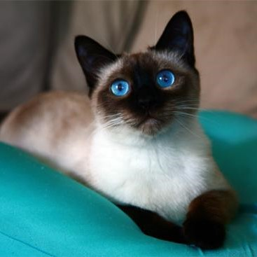
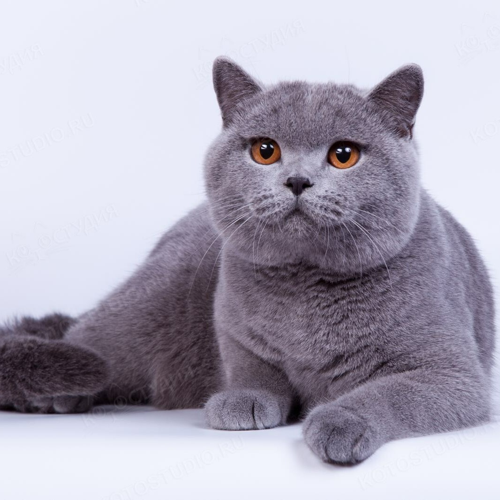
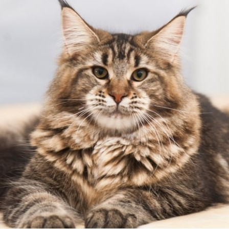
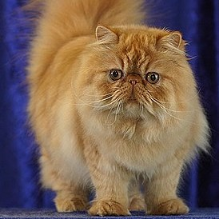
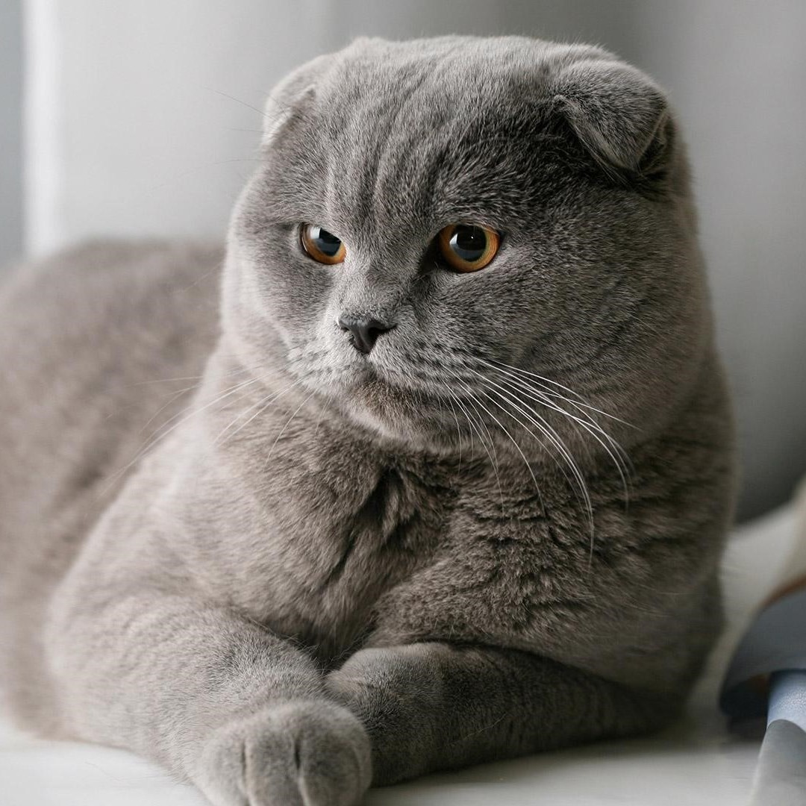

Наиболее популярные породы кошек с кратким описанием.

Сиамская кошка - одна из известных пород сиамо-ориентальной группы. Грациозное создание с узнаваемым окрасом и голубыми глазами.

Британская короткошёрстная кошка - крупная порода, имеющая массивное, коренастое телосложение.

Мейн-кун - порода кошек, которая произошла от кошек штата Мэн на северо-востоке США. Аборигенная порода кошек Северной Америки.

Персидская кошка — порода длинношёрстных кошек, одна из старейших и самых популярных в мире. Канадский сфинкс - уникальная порода кошек, которая зачастую ассоциируется с отсутствием шерсти и своим особым внешним видом.

Шотландская вислоухая кошка или скоттиш-фолд — порода домашних кошек с характерными загнутыми вперёд и вниз ушами, что вызвано действием доминантного гена, который возник в результате естественной мутации и оказывающий влияние на хрящи во всём организме.